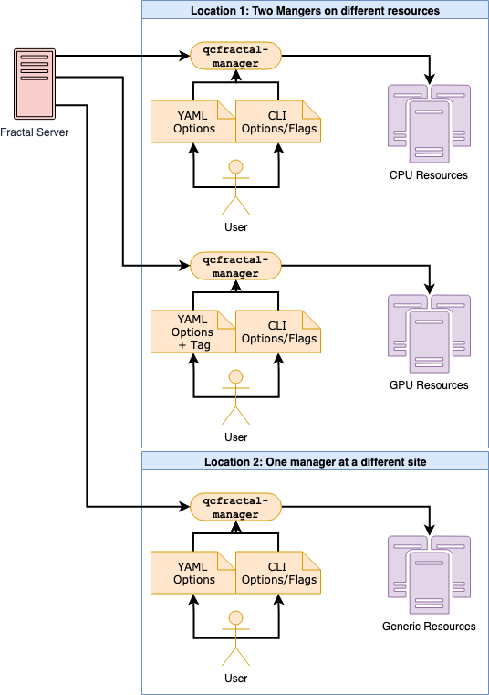

Today we will discuss how Fractal handles distributing and managing compute resources. When designing this system, we had a few requirements in mind:
- Interact with multiple physical sites across the globe simultaneously.
- Perform on leadership supercomputer facilities and running on thousands of nodes.
- Ease of use when setting up on campus clusters.
- Access cloud resources such as AWS, GCP, and Azure.
- Be able to test functionality or try small tasks on a laptop.
QCArchive’s answer to the challenges was to solve each problem in abstract, isolated layers. Attempting to come up with a single monolithic solution to these problems is unfeasible and would neglect a large body of community work. Instead, we can break up the steps into smaller chunks and leverage existing tools which solve the individual layers well. The image below shows the communication levels between QCFractal, and the actual compute being carried out, but it’s worth covering each layer in brief as well.

The Fractal server produces a central workload that contains a list of tasks that do not depend on one another. A Queue Manager which controls a physical compute resource will request a subset of this central workload to evaluate. The Queue Manager will then communicate the workload subset to a task execution system such as RADICAL, Parsl, Fireworks, or Dask. The task execution layer will detect that there is work to be done and submit pilots or workers to the local queuing system such as PBS or SLURM. When the local queuing system runs a worker on a compute node, the worker will request a task from the task execution layer. The task is run on the compute node completed and passed back to the task execution system. The worker will continue to pull tasks until shutdown or its time runs out. The Queue Manager will then pull the complete task out of the task execution system and then finally back to Fractal.
The Queue Manager continuously is pulling new tasks and pushing complete tasks back to the server while the task execution layer is managing the number of concurrent workers based on current workload.
A cursory glance will show there are more layers than required. However, each layer enables critical functionality. The Queue Managers allow Fractal to manager multiple physical sites simultaneously, handle security, and provide a uniform user experience regardless of the backend. The ability to switch out task execution systems allows us to choose one that is optimal for the hardware. For example, Parsl appears to be a solid general-purpose choice for campus clusters while Balsam runs optimally on Argonne leadership compute facilities. Finally, the worker design pattern prevents the flooding of a compute resource queue with a large number of tasks which it may not be able to handle.
We currently support the following task execution systems for various contexts:
Each of these task execution systems has proven to be useful in assisting us to distribute tasks on dozens of different campus clusters, each of which has a unique setup. There are cases where an LSF scheduler is only available in Dask-Jobqueue, or for a cluster which does not have a queue we are able to use Python ProcessPoolExecutor along with a Queue Manager on each bare metal machine to distribute the tasks. We are currently working towards recommendations for the typical use case so that users do not need to try such a wide variety of tools in the future. Moreover, we are working closely with the developers of the task execution layers to extend their capability to cover a wider variety of compute clusters.
To test our capabilities, we ran on Argonne Theta using the Balsam adapter task execution system. With the help from the Balsam team at Argonne, we were able to add Balsam to our list of available task execution systems. An initial trial run on Theta consisted of six hours of wall clock time and 802 nodes where we submitted a total of 28,000 tasks consuming roughly 300,000 core hours. Midway through the run, we noticed that the Fractal queue was being depleted more rapidly than anticipated and we were able to add additional tasks the Fractal queue to ensure Theta had enough tasks to run! During this time, we also had six other physical sites consuming tasks concurrently with Theta.
Overall, we believe our approach to the diverse hardware and software resources has been and will continue to be successful. Researchers can spin up Queue Managers with minimal input from us developers by leveraging their knowledge of their systems to configure a Manger once and go. We’ve been able to run high volumes of both compute, and Queue Manager counts through our stack with almost no modifications to the Server side. There have been hurdles along the way as we have found bugs in the code and needed to make the Queue Managers' interfaces to the Adapter layer more diverse to suit everyone’s needs. However, with active researcher feedback and much-appreciated patience, we have been able to resolve most of those as they have come up.
When we first made the Database available in May 2019, the MolSSI public instance of the Fractal Server only store ~40k computations, run mostly by us, the developers. Since May 2019 when we started requesting our early adopters to use our Queue Manager, we have now added 4.5M computations to our database representing ~900,000 core hours of compute time across 12 physical sites, and we only expect that number to increase.
About this author
Levi Naden and Daniel Smith
Levi is a MolSSI Software Scientist and a QCArchive developer. Daniel is a MolSSI Software Scientist and the lead QCArchive developer.